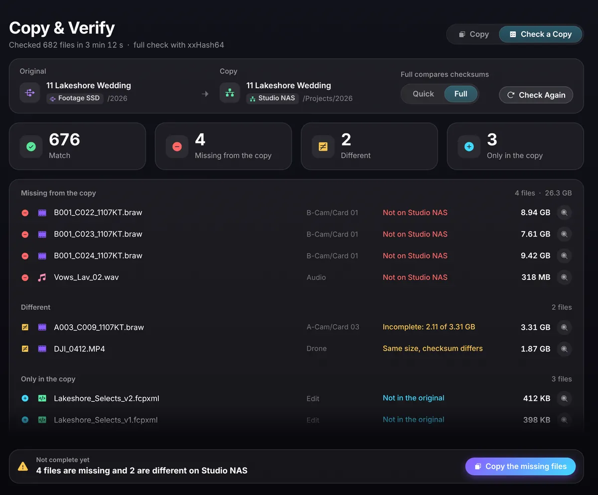
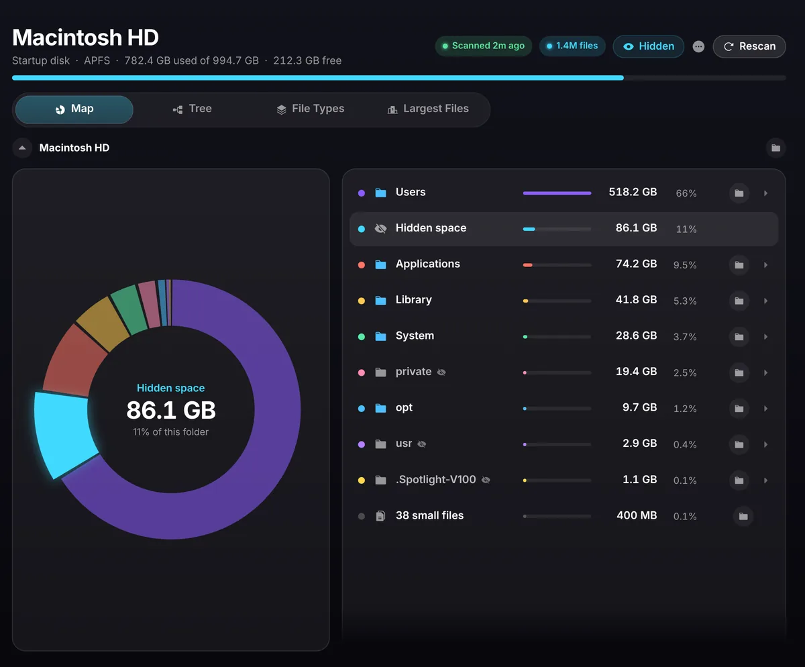
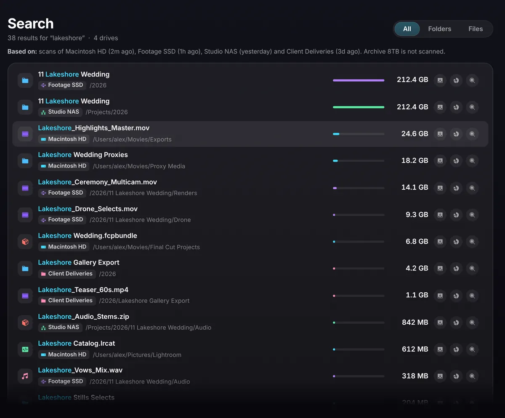

See what's taking up space on your Mac.
Stowmap is a free disk space analyzer for Mac. It maps your startup disk, external drives and NAS shares so you can see what's filling them. It also finds duplicate folders and copies footage between drives with checksum verification.
Copy & Verify
Copy footage and check every file
Copy & Verify is a copier with checksum verification, for moving footage and projects between drives. Pick the files or folders and up to three destinations. Stowmap reads the source once and writes to all of them.
Each file is written under a temporary name and only takes its real name once it is complete. Then Stowmap reads back what it wrote from the disk and compares checksums: xxHash64, MD5 or SHA-256.
A file that already exists is never replaced unless you choose Replace. You can pause or stop a copy, and it can write an MHL checksum list and a plain text list into each destination folder when it finishes.
Check a Copy
Check a backup is complete
Pick the original folder and the copy, then choose how to compare them: Quick checks names and sizes, Full checks checksums.
The result is four counts: Match, Missing from the copy, Different, and Only in the copy, with the files listed under each. One button copies the missing files across.

Drives
Every drive in one sidebar
Your startup SSD, internal and external drives on USB or Thunderbolt, SD cards, and network shares over SMB, AFP or NFS each get a row with a live used and free bar. Plug a drive in and it appears. Unplug it and it goes. Any folder can be scanned too, with the button or by dragging it in.
Scans run in parallel, and several drives can scan at once. Scan All Drives starts every local drive together and takes network shares one at a time, and each row shows its own progress while it scans.
Map
A map you can click through
The Map tab draws the folder you're in as a donut. The biggest items are coloured slices. Hover one to read its name, size and share of the folder. Click it to go inside, and use the breadcrumbs to come back.
Beside the donut, the same items sit in a ranked list with size bars.
Hidden files
Totals that match Finder
Hidden files and folders are part of every scan and carry a small mark, with a toggle to fold them away.
Some space can't be read by any scan: local snapshots, purgeable space and protected system data. Stowmap gives it its own slice, so the map adds up to the number Finder shows for the drive.

Views
Four ways to look at a drive
One scan feeds all four tabs. Every row has a button that opens the item in Finder, and you can copy its path or preview it with Quick Look.
Duplicates
Find duplicate folders and files
Find Duplicates looks across every drive you've scanned, or inside one drive, and lists matching folders. Each row is a set of folders that hold copies of the same files, with the space you'd get back. Open a row to see the files.
Verify compares a set in full before you touch it. Then collect one side and move it to the Trash. Stowmap always leaves one copy, and it won't collect macOS's own files.
Filters set the smallest file size to look at. System and app files are skipped unless you turn that off.
Search
Search all drives at once
Press ⌘F and type a name. Results come from the scans you've already run, and a line under the title says which ones.
Switch between All, Folders and Files. Each result shows its drive, folder and size, with buttons to collect it, show it on the map or reveal it in Finder.

Collector
Clean up from one list
Add items to the Collector as you find them. It keeps a running total of the space you'd get back.
When the list looks right, one click moves everything to the Trash. Nothing is gone for good until you empty the Trash yourself.
The rest of it
Straight to Finder
Open in Finder or Reveal on every row. Copy the path, or preview the file with Quick Look.
Saved scans
The last scan of each drive is saved and reopens instantly. Rescan whenever you like.
Private
Everything stays on your Mac. No account and no telemetry.
Free, with updates
Stowmap costs nothing and updates itself when a new version is out.
Compare
How it compares with what's built in
macOS has two storage tools of its own. Here is what each one does next to Stowmap.
| Stowmap | Storage in System Settings | Get Info in Finder | |
|---|---|---|---|
| What you see | Every folder and file, ranked by size | Totals by category | One item at a time |
| External drives and NAS shares | Each one in the sidebar | Startup disk only | One at a time |
| Hidden files and folders | Included and marked | Counted inside category totals | Only after you show them in Finder |
| Snapshots and purgeable space | Its own slice on the map | Part of System Data | Purgeable space, for whole volumes |
| Cleaning up | A list with a running total, then one move to the Trash | Recommendations and per-category lists | Drag each item to the Trash |
| Duplicate folders and files | Matching folders across drives, verified before cleanup | Not shown | Not shown |
| Copying with checksum verification | Up to three destinations, every file checked | Not included | Not included |
| Checking a copy against its original | Match, missing, different and extra files | Not included | Not included |
| Price | Free | Built in | Built in |
Paid disk analyzers cover similar ground. Stowmap is free, and its source is public.
Install
Install it in four steps
Stowmap isn't notarized by Apple yet, so macOS asks you to approve it once. Step three covers that.
Download
Get Stowmap.dmg from the latest release.
Drag to Applications
Open the disk image and drag Stowmap into your Applications folder.
Click Open Anyway
Open Stowmap. macOS will block it the first time. Go to System Settings, then Privacy & Security, find the message about Stowmap and click Open Anyway.
Optional: Full Disk Access
For complete results, add Stowmap under System Settings, Privacy & Security, Full Disk Access. It works without it.
FAQ
Questions
Is Stowmap free?
Yes. Stowmap is free to download and use, with no account. The source code is on GitHub.
Which Macs does it run on?
Any Mac on macOS 13 or later, Apple Silicon or Intel.
How do I see what's taking up space on my Mac?
Open Stowmap, pick your startup disk in the sidebar and click Scan. When the scan finishes, the Map tab shows the biggest folders as slices. Click a slice to go inside it, and keep going until you find the files you forgot about.
Why does macOS say Stowmap can't be opened?
Stowmap isn't notarized by Apple yet, so macOS blocks it the first time. Open System Settings, go to Privacy & Security, find the message about Stowmap and click Open Anyway. You only need to do this once.
Does Stowmap need Full Disk Access?
No, it's optional. Without it, macOS keeps a few protected folders out of reach and Stowmap reports that space as hidden space. With it, the results are complete. You can turn it on in System Settings under Privacy & Security, then Full Disk Access.
Can it scan a NAS or an external drive?
Yes. External drives on USB or Thunderbolt, SD cards, and network shares over SMB, AFP or NFS all appear in the sidebar once they are mounted. Each one can be scanned, and several can scan at the same time.
Why is there a slice called hidden space?
Some space can't be read by any scan: local snapshots, purgeable space and protected system data. Stowmap shows it as its own slice so the total matches what Finder reports for the drive.
Does Stowmap verify copies?
Yes. Copy & Verify can copy and verify files on Mac. After writing, it reads each file back from the destination disk and compares its checksum with the source. You can also verify the source and the destination, or turn verification off.
What checksums does it use?
xxHash64, MD5 or SHA-256. You choose one before the copy starts. Stowmap can also write an MHL checksum list (xxHash64 or MD5) and a plain text list.
Will it overwrite files?
Not unless you choose Replace. When a file already exists you can skip it, replace it or keep both. Each file is written under a temporary name and only takes its real name once it is complete.
How does it find duplicates?
Find Duplicates compares the files on the drives you've scanned and lists matching folders: sets of folders that hold copies of the same files. A set marked Samples match has not been read in full. Click Verify to compare every file, and it is marked Verified identical. Stowmap always leaves one copy.
Can it check whether a backup is complete?
Yes. Check a Copy compares an original folder with its copy. Quick compares names and sizes, and Full compares checksums. It lists what matches, what is missing from the copy, what is different and what is only in the copy, and one button copies the missing files.
Does Stowmap delete files?
Stowmap moves the items you collect to the Trash. They stay there, recoverable, until you empty the Trash yourself.
Does Stowmap send my data anywhere?
No. Scans and results stay on your Mac. There is no account and no telemetry.
How does it update?
Stowmap updates itself. When a new version is out, the app offers to install it.